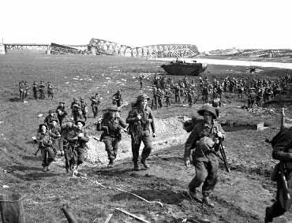
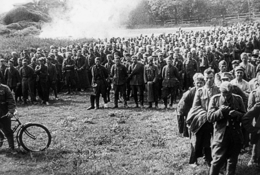

Galeria
- 
- 
-

A guerra mais sangrenta da história
Um dos principais motivos foi o surgimento de governos totalitários na Europa, na década de 1930, com fortes
objetivos militaristas e expansionistas. Na Alemanha, surgiu o Nazismo, liderado por Hitler, que pretendia
expandir o território alemão, desrespeitando o Tratado de Versalhes e, inclusive, reconquistando territórios
perdidos na Primeira Guerra Mundial. Na Itália, estava crescendo o Partido Fascista, liderado por Benito
Mussolini, que se tornou o Duce da Itália, com poderes sem limites.
Tanto a Itália quanto a Alemanha passavam por uma grave crise econômica no início daquela década, com milhões de
cidadãos sem emprego. Uma das soluções tomadas pelos governos fascistas desses países foi a
industrialização,
principalmente relacionada com a criação de indústrias de armamentos e equipamentos bélicos (aviões de
guerra,
navios, tanques, entre outros).
Na Ásia, o Japão também possuía fortes desejos de expandir seus domínios para territórios vizinhos e ilhas
da
região. Esses três países, compartilhando de tais objetivos expansionistas, uniram-se e formaram o Eixo: um
acordo com fortes características militares e com planos de conquistas elaborados em comum acordo. Esse
grupo
ficou conhecido como "Eixo Roma-Berlim-Tóquio".
O marco inicial ocorreu no ano de 1939, quando o exército alemão invadiu a Polônia.
De imediato, a França e a Inglaterra declararam guerra à Alemanha. De acordo com a política
de alianças militares existentes na época, formaram-se dois grupos: Aliados (liderados pela Inglaterra,
URSS, França e Estados Unidos) e Eixo (liderados pela Alemanha, Itália e Japão).
O período de 1939 a 1941 foi marcado por vitórias do Eixo, liderado pelas forças armadas da Alemanha,
que
conquistou o norte da França, Iugoslávia, Polônia, Ucrânia, Noruega e territórios no norte da África. O
Japão anexou a Manchúria (extremo leste da China), enquanto a Itália conquistou a Albânia e territórios da
Líbia.
- Em 1941, o Japão atacou a base militar norte-americana de Pearl Harbor no Oceano Pacífico (Havaí).
Após
esse ocorrido, considerado uma traição pelos norte-americanos, os Estados Unidos entraram no conflito ao
lado das forças aliadas.
- De 1941 a 1945, ocorreram as derrotas do Eixo, iniciadas com as perdas sofridas pelos alemães no
rigoroso
inverno russo. Nesse período, houve uma regressão das forças do Eixo e, com a entrada dos EUA, os
aliados
ganharam força nas frentes de batalha.
- O Brasil participou diretamente do conflito, enviando para a Itália (região de Monte Cassino) os pracinhas
da FEB (Força Expedicionária Brasileira). Os cerca de 25 mil soldados brasileiros conquistam a região,
somando uma importante vitória ao lado dos Aliados.
Esse importante e triste conflito terminou somente no ano de 1945, com a rendição da Alemanha e da Itália. O
Japão, último país a assinar o tratado de rendição, ainda sofreu um forte ataque dos Estados Unidos, que
despejou bombas atômicas sobre as cidades de Hiroshima e Nagasaki ─ uma ação desnecessária, que provocou a morte
de milhares de cidadãos japoneses inocentes, deixando um rastro de destruição nessas cidades. O objetivo dos EUA
era mostrar ao mundo seu forte poderio militar e o domínio sobre armas atômicas. Desta forma, pretendia sair
da
Segunda Guerra Mundial como a grande força militar do ocidente, fazendo oposição aos soviéticos, na sequente
Guerra Fria.
Os prejuízos foram enormes, principalmente para os países derrotados. Foram milhões de mortos e feridos, cidades
destruídas, indústrias e zonas rurais arrasadas e dívidas incalculáveis. O racismo esteve presente durante
todo
o conflito e deixou uma ferida grave, principalmente na Alemanha, onde os nazistas mandaram para campos de
concentração e mataram aproximadamente 6 milhões de judeus.
Ao final do conflito, em 1945, foi criada a ONU (Organização das Nações Unidas), cujo objetivo principal era
a
manutenção da paz entre as nações. Iniciou-se também um período conhecido como Guerra Fria, que estabeleceu
uma
divisão geopolítica, colocando em lados opostos os Estados Unidos e a União Soviética. Uma disputa entre o
capitalismo norte-americano e o socialismo soviético, na qual ambos os países buscavam ampliar suas áreas de
influência sem entrar em conflitos armados.